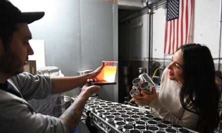
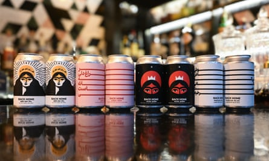

B usiness heats up for Zahra Tabatabai in March, the month of Nowruz, the 13-day Persian new year festival, which begins this year on 20 March. The Iranian American Brooklynite’s craft beers are infused with Middle Eastern flavors such as sumac and sour cherry, and packaged in design-forward cans featuring poetry in intricate Farsi lettering.
Tabatabai’s grandfather used to make his own beer with ingredients from his garden in Shiraz, before the Iranian government instituted a ban on alcohol consumption in 1979. More recently, her grandmother longed to taste her husband’s beer again, so Tabatabai set out to satisfy her yen. During the Covid-19 pandemic, while working as a freelance writer and overseeing the home schooling of her son, who is now 11, she started looking at recipes and enrolled in a home-brewing class, and began watching YouTube videos about the art of making beer.
“My grandfather died when I was young, but my family always talked about him making beer and making wine,” said Tabatabai, 42, whose parents left Iran in order to attend university in Alabama with the intent to return home, just before the breakout of the Iranian revolution . Tabatabai’s parents ultimately settled in Georgia when she was five years old. Her Persian lager was specifically based on her family’s flavor memories. “I made a few batches of that beer, and they would give me feedback and then I’d go back and change the recipe,” she said.
Tabatabai’s hobby has exploded into a full-time business. She produced 30,000 cans in the first week of last month alone. “Brewing beer was just something fun you’re doing on the side while you have your other job and you’re raising a kid,” said Tabatabai. “I think we were all surprised that it took off in this way.” Her products are popular on the menus of select restaurants, and she is now focused on securing accounts with larger national retailers.
Zahra Tabatabai inspects the density of her beer in the Flagship Brewery in Staten Island.Photograph: Tobias Everke/The Guardian
When Tabatabai incorporated Back Home Beer in 2021, she invested about $7,000, combining her own savings and a $5,000 loan from her brother, who lives in the Washington DC area and helps her distribute the beer there. Two graphic designers, Washington DC-based Mina Jafari, as well as an artist who lives in Iran – where alcohol is prohibited – devised the cans’ striking labels.
Tabatabai partnered with the Flagship Brewery Company, a Staten Island brewery whose staff not only makes her beer but also stepped up to mentor her in the competitive craft beer market, which is expected to grow by 10.83% a year until 2028, according to market research firm Fortune Business Insights. “Those guys at Flagship helped me a lot, giving me the space to brew when a lot of breweries did not even respond to me, and even helping me with paperwork,” said Tabatabai.
She saw a significant bump in business in 2023, when she launched a Kickstarter campaign. Within a month, more than 1,000 backers – all friends and family – had contributed $125,255, the largest sum of money a campaign for a beer company has ever raised according to her Kickstarter page. With that influx of cash, Tabatabai was able to buy a delivery vehicle. She is now looking for a physical New York -based location for a dedicated taproom.
Wine and beer shops can be fickle about which brands they keep on their shelves, but Tabatabai’s beers were devised to pair well with food, and she has found a following with sommeliers at restaurants such as Fulgurances Laundromat and Eyval, both located in Brooklyn. Tabatabai recently signed a contract with a second brewery, SingleCut North, located in Clifton Park, New York , in order to bolster her company’s production. “I could spend millions of dollars to build my own brewery, which a lot of people do,” she said, “but I thought it was important to just get people aware of the brand and what I was doing.”
Do you have people who work for you full-time?
I don’t. I just have a delivery guy who works one day a week. I have somebody who helps me a few hours a week on social media, and then I have another person who helps me a few hours a week on consulting in terms of beer recipes and things like that.
What is your day-to-day like?
When you’re a business owner, you take on every role in the business. Some days I’m doing tastings and training, other days I have a bunch of paperwork. Yesterday, for instance, I was renewing my liquor license for the year. Every other day I will do accounting. I usually send invoices on Wednesdays.
How many beers do you currently produce?
A selection of Back Home Beer in bar in the Bedford-Stuyvesant neighborhood of Brooklyn.Photograph: Tobias Everke/The Guardian
We have six total beers that we’ve come out with, but only two of them are available year-round. The other ones are seasonal drops. The beer I have coming out in March is called New Day IPA, which is for the Persian new year.
What are the next steps for your business?
I just found a second facility in upstate New York called SingleCut. They can brew a lot more beer [than the Staten Island brewery]. We are getting more accounts in the Washington DC area, and we’re thinking the next market could be the Philadelphia area.
How does distribution vary in different states?
Most states require that you use a distributor, but some do not. Distributors take 30% of sales. In New York, you don’t have to use a distributor, and the same is true for Washington DC. So in New York, I can put the beer in my car and distribute it myself.
What types of investment are you currently seeking?
So far I have only raised money from friends and family. Now I’m targeting angel investors, and then there are some individual investors that have reached out to me.